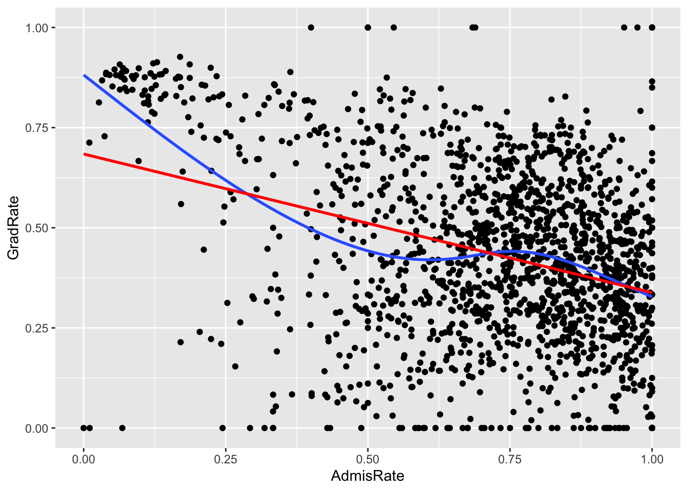
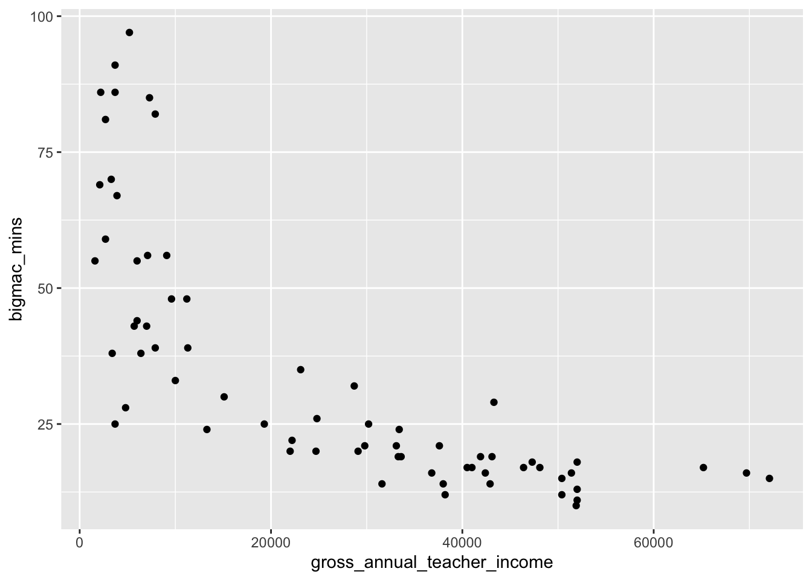
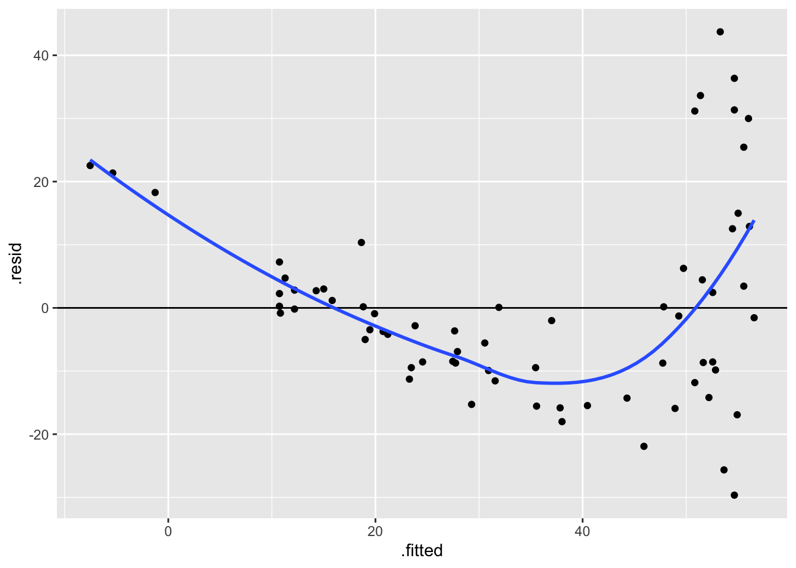
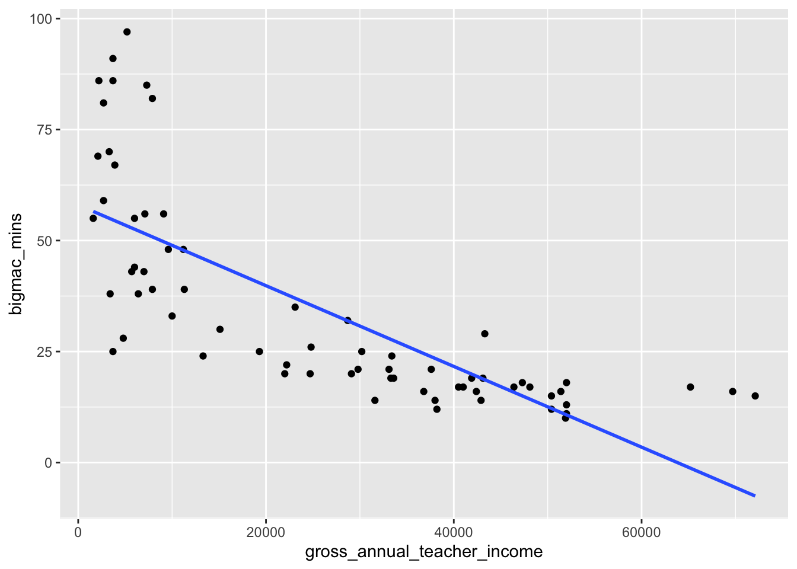
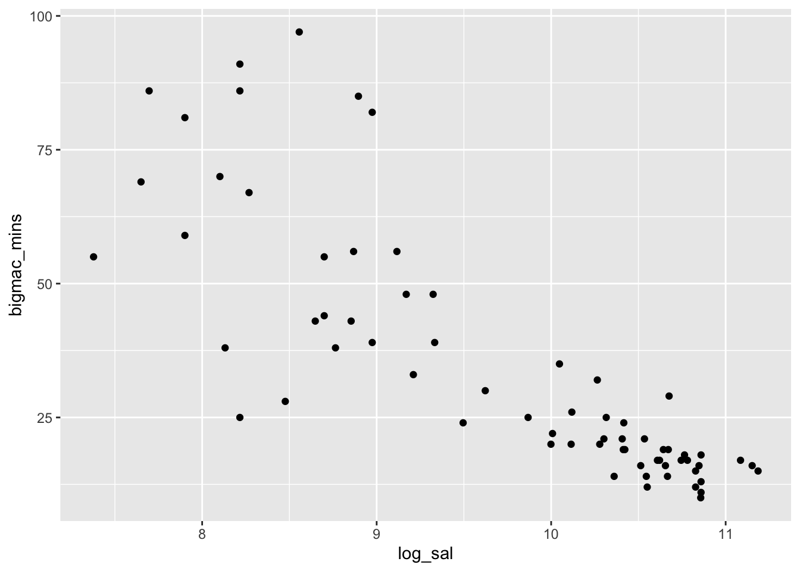
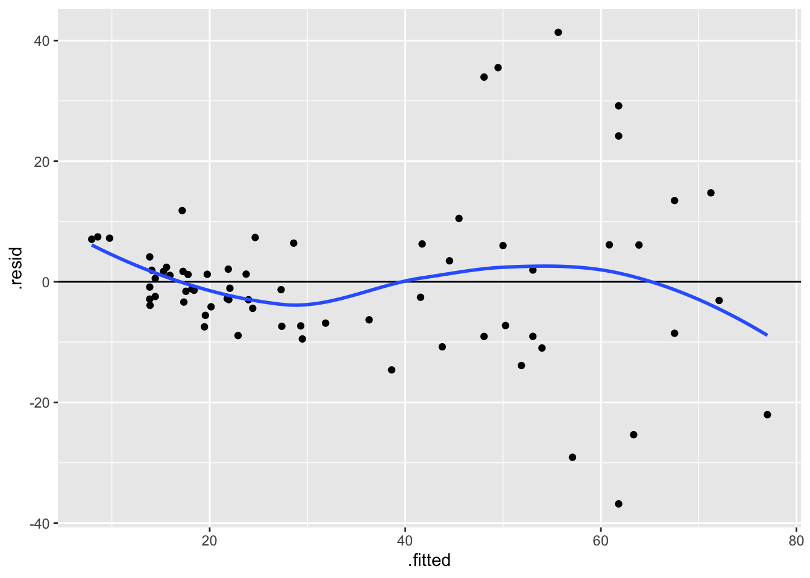

# Load packages and import data
library(readr)
library(ggplot2)
library(dplyr)
homes <- read_csv("https://mac-stat.github.io/data/homes.csv")
bigmac <- read_csv("https://mac-stat.github.io/data/bigmac.csv")
college <- read_csv("https://mac-stat.github.io/data/college.csv")Simple linear regression: Transformations
Notes and in-class exercises
Notes
- You can download a template file to work with here.
- File organization: Save this file in the “Activities” subfolder of your “STAT155” folder.
Learning goals
By the end of this lesson, you should be able to:
- Distinguish between the different motivations for transformations of variables (interpretation, regression assumptions, etc.)
- Determine when a particular transformation (center, scale, or log) may be appropriate
- Interpret regression coefficients after a transformation has taken place
Readings and videos
Please watch the following video before class.
The following reading is optional.
- Section 3.8.4 in the STAT 155 Notes covers log transformations, and the “ladder of power,” which we will not cover in class.
Exercises
Context: Today we’ll explore three different datasets that motivate center (location), scale, and log transformations of our predictor of interest. We’ll see why these transformations can change the interpretations of our regression coefficients in meaningful ways in certain contexts. Read in the data below.
Exercise 1: Location transformations
Location transformations are ones that shift a predictor variable up or down by a fixed amount. Using a location transformation is sometimes also called centering a predictor.
We’ll use the homes data in this exercise.
- Fit a linear regression model of
Priceas a function ofLiving.Area, and call this modelhome_mod.
# Fit the model
# Display model summary outputInterpret the intercept and the coefficient for
Living.Area. Is the interpretation of the intercept meaningful?We can use a location transformation on
Living.Areato “start” it at a more reasonable value. We can see from thesummarize()code below that the smallest house is 616 square feet, so let’s center this predictor at 600 square feet. There is no code to fill in here, but make note of themutate()syntax.
homes %>%
summarize(min(Living.Area))
# What is mutate() doing???
homes <- homes %>%
mutate(Living.Area.Shifted = Living.Area-600)- We can actually determine the coefficients of the
Price ~ Living.Area.Shiftedmodel by hand.- First, write out in general terms (without specific numbers) how we would interpret the intercept and slope in this model.
- Use these general interpretations as well as the summary output of
home_modto determine what these new coefficients should be.
- Now check your answer to part d by fitting the model.
# Fit a model of Price vs. Living.Area.Shifted
# Display model summary outputExercise 2: Scale transformations
In this exercise, we’ll explore the relationship between four-year graduation rate and admissions rate of colleges.
In the code chunk below, construct a visualization comparing graduation rate (our outcome variable) and admissions rate (our predictor of interest). Remember that your outcome variable should be on the y-axis, in general!
# Scatterplot of graduation rate vs. admissions rateDescribe the relationship you observe between the two quantitative variables, in terms of correlation (weak/strong, positive/negative). Does the relationship appear to be roughly linear?
Write a linear regression model formula of the form E[Y | X] = … (filling in Y and X appropriately).
Fit this model in R, and report (don’t interpret yet!) the slope coefficient and intercept coefficient estimates.
# Linear regression model with GradRate as the outcome, AdmisRate as predictor of interestIntercept Estimate: Your response here
Slope Estimate: Your response here
Considering the units of
AdmisRate, what does it mean forAdmisRateto change by one unit? What are the units forAdmisRate(andGradRate, for that matter!)?Suppose I want the interpretation of my slope coefficient for
AdmisRatein my linear model to be in terms a “1% increase in admissions rate.” To achieve this, we could mutate ourAdmisRatevariable to range from 0 to 100. Let’s do that forGradRatetoo (just because!):
# Mutate
college <- college %>%
mutate(AdmisRate = AdmisRate * ___,
GradRate = ___ * ___)- Fit a new linear regression model with the updated
AdmisRateandGradRatevariables as your predictor of interest and outcome, respectively. Again, report the intercept and slope estimate from your model.
# Linear regression model with updated GradRate as the outcome, updated AdmisRate as predictor of interestIntercept Estimate: Your response here
Slope Estimate: Your response here
How have your intercept and slope estimates changed from the previous model, if at all?
- Interpret the regression coefficient that corresponds to the estimated linear relationship between admissions and graduation rates, in the context of the problem. Make sure to use non-causal language, include units, and talk about averages rather than individual cases.
Exercise 3: Log transformations
The Big Mac Index has been published by The Economist since 1986 as a metric for comparing purchasing power between countries, giving rise to the phrase Burgernomics. It was developed (sort of jokingly) as a way to explain exchange rates in digestible terms.
As an example, suppose a Big Mac in Switzerland costs 6.70 Swiss franc, and in the U.S. a Big Mac costs 5.58 USD. Then the Big Mac Index is 6.70/5.58 = 1.20, and is the implied exchange rate between Swiss franc and USD.
If you’d like to read more about the Big Mac index, here’s an article in The Economist (this may be behind a pay-wall for you, you can read up to 5 free articles in the Economist per month).
For this exercise, we’ll explore the relationship between average teaching salary in a country and the amount of time someone needs to work to be able to afford a Big Mac. The variables we’ll consider are:
bigmac_mins: average minutes to earn 1 Big Macgross_annual_teacher_income: average gross teacher salary in 1 year (USD)
- Create an appropriate visualization that displays the relationship between average minutes to earn a Big Mac and gross annual, average teaching salary, and describe what you observe.
# Visualization: Big Mac minutes vs. gross annual teacher incomeExplain why correlation might not be an appropriate numerical summary for the relationship between the two variables you plotted above.
Fit a linear regression model with
bigmac_minsas the outcome andgross_annual_teacher_incomeas the predictor of interest, and interpret the coefficient forgross_annual_teacher_income, in context. Make sure to use non-causal language, include units, and talk about averages rather than individual cases.
# Linear regression code- Plot residuals vs. fitted values for the model you fit, and describe what you observe. Are there any noticeable patterns in the residuals? Describe them!
# Residuals vs. fitted values plot- For which observations do the residuals from the linear regression model appear to be relatively large (i.e. for which observations would predictions fall farthest from observed outcomes)? What possible consequences would this have for people using this model to predict the amount of time it takes for them to earn enough money to afford a Big Mac?
We’ll now consider a log transformation of teaching salary. In the code chunk below, create a new variable called log_sal that contains the logged values of gross_annual_teacher_income.
# Creating new variable log_sal
bigmac <- bigmac %>%
mutate(log_sal = log(___))Create an appropriate visualization that displays the relationship between average minutes to earn a Big Mac and logged gross annual, average teaching salary, and describe what you observe. Does correlation seem like it may be an appropriate numerical summary for the relationship between these two variables? Explain why or why not.
Fit a linear regression model with
bigmac_minsas the outcome andlog_salas the predictor of interest, and interpret the coefficient forlog_sal, in context. Make sure to use non-causal language, include units, and talk about averages rather than individual cases.Plot residuals vs. fitted values for the model you fit, and describe what you observe. Are there any noticeable patterns in the residuals? Describe them!
# Residuals vs. fitted values plotReflection
Two of the main motivations for transforming variables in our regression models is to (1) intentionally change the interpretation of regression coefficients, and (2) to better satisfy linear regression assumptions (e.g. remove “patterns” from our residual plots). The first is nearly always justified by the scientific context of the research questions you are trying to answer, while the second is a bit more muddy.
Think about the pros and cons of transforming your variables to satisfy linear regression assumptions. Is there a limit to how much you would be willing to transform your variables? Would transforming too much leave you with un-interpretable regression coefficients?
Response: Put your response here.
Solutions
Exercise 1: Location transformations
Location transformations are ones that shift a predictor variable up or down by a fixed amount. Using a location transformation is sometimes also called centering a predictor.
We’ll use the homes data in this exercise.
- Fit a linear regression model of
Priceas a function ofLiving.Area, and call this modelhome_mod.
# Fit the model
home_mod <- lm(Price ~ Living.Area, data = homes)
# Display model summary output
coef(summary(home_mod)) Estimate Std. Error t value Pr(>|t|)
(Intercept) 13439.3940 4992.352849 2.691996 7.171207e-03
Living.Area 113.1225 2.682341 42.173065 9.486240e-268- Interpretation of slope: Every 1 square foot increase in living area is associated with an expected / average increase in house price of $113.12.
- Interpretation of intercept: The average/expected house price for a house with zero square feet is $13,439.39. Can a house ever be zero square feet??? Nope! The intercept is meaningless in this case.
homes %>%
summarize(min(Living.Area))# A tibble: 1 × 1
`min(Living.Area)`
<dbl>
1 616# mutate() creates a new variable called Living.Area.Shifted that is equal to Living.Area - 600
homes <- homes %>%
mutate(Living.Area.Shifted = Living.Area-600)- In general terms, the intercept in this model should represent the average house price when
Living.Area.Shiftedis 0—in other words whenLiving.Areais 600 square feet. From the coefficient estimates inhome_mod, we can calculate the expected / predicted house price for 600 square foot homes: 13439.394 + (113.123*600) = 81312.89. So we’re expecting the new intercept to be $81312.89. - The slope in this model represents the average price change for each unit change in
Living.Area.Shifted(which is the same as a unit change inLiving.Area). Based on this, the slope should be the same as inhome_mod($113.12 per square foot).
- In general terms, the intercept in this model should represent the average house price when
- Lines up with work in part d!
# Fit a model of Price vs. Living.Area.Shifted
home_mod_centered <- lm(Price ~ Living.Area.Shifted, data = homes)
# Display model summary output
coef(summary(home_mod_centered)) Estimate Std. Error t value Pr(>|t|)
(Intercept) 81312.9191 3515.879467 23.12733 2.638371e-103
Living.Area.Shifted 113.1225 2.682341 42.17307 9.486240e-268Exercise 2: Scale transformations
In the code chunk below, construct a visualization comparing graduation rate (our outcome variable) and admissions rate (our predictor of interest). Remember that your outcome variable should be on the y-axis, in general!
# Scatterplot of graduation rate vs. admissions rate
ggplot(college, aes(x = AdmisRate, y = GradRate)) +
geom_point() +
geom_smooth(se = FALSE) +
geom_smooth(method = "lm", se = FALSE, color = "red")`geom_smooth()` using method = 'gam' and formula = 'y ~ s(x, bs = "cs")'
`geom_smooth()` using formula = 'y ~ x'
The correlation between admissions and graduation rates appears to be weakly negative. Notably, there are hard boundaries to admissions and graduation rates, since both must fall between 0 and 100%! A few colleges hit up against these boundaries. I would say that, with the exception of the observations that have either 0% graduation rates or 0% admission rates, the relationship does appear to be roughly linear.
E[GradRate | AdmisRate] = \(\beta_0\) + \(\beta_1\) AdmisRate
# Linear regression model with GradRate as the outcome, AdmisRate as predictor of interest
mod <- lm(GradRate ~ AdmisRate, data = college)
summary(mod)
Call:
lm(formula = GradRate ~ AdmisRate, data = college)
Residuals:
Min 1Q Median 3Q Max
-0.68409 -0.13681 0.01296 0.15550 0.66204
Coefficients:
Estimate Std. Error t value Pr(>|t|)
(Intercept) 0.68409 0.01759 38.89 <2e-16 ***
AdmisRate -0.34613 0.02330 -14.85 <2e-16 ***
---
Signif. codes: 0 '***' 0.001 '**' 0.01 '*' 0.05 '.' 0.1 ' ' 1
Residual standard error: 0.2088 on 1649 degrees of freedom
Multiple R-squared: 0.118, Adjusted R-squared: 0.1175
F-statistic: 220.6 on 1 and 1649 DF, p-value: < 2.2e-16Intercept Estimate: 0.68409
Slope Estimate: -0.34613
One unit of
AdmisRatecorresponds to a 100% change in admissions rates! The same goes for graduation rate. This is a huge change (in fact, the largest change possible).Suppose I want the interpretation of my slope coefficient for
AdmisRatein my linear model to be in terms a “1% increase in admissions rate.” To achieve this, we could mutate ourAdmisRatevariable to range from 0 to 100. Let’s do that forGradRatetoo (just because!):
# Mutate
college <- college %>%
mutate(AdmisRate = AdmisRate * 100,
GradRate = GradRate * 100)- Fit a new linear regression model with the updated
AdmisRateandGradRatevariables as your predictor of interest and outcome, respectively. Again, report the intercept and slope estimate from your model.
# Linear regression model with updated GradRate as the outcome, updated AdmisRate as predictor of interest
mod_new <- lm(GradRate ~ AdmisRate, data = college)
summary(mod_new)
Call:
lm(formula = GradRate ~ AdmisRate, data = college)
Residuals:
Min 1Q Median 3Q Max
-68.409 -13.681 1.296 15.550 66.204
Coefficients:
Estimate Std. Error t value Pr(>|t|)
(Intercept) 68.4088 1.7592 38.89 <2e-16 ***
AdmisRate -0.3461 0.0233 -14.85 <2e-16 ***
---
Signif. codes: 0 '***' 0.001 '**' 0.01 '*' 0.05 '.' 0.1 ' ' 1
Residual standard error: 20.88 on 1649 degrees of freedom
Multiple R-squared: 0.118, Adjusted R-squared: 0.1175
F-statistic: 220.6 on 1 and 1649 DF, p-value: < 2.2e-16Intercept Estimate: 68.4088
Slope Estimate: -0.3461
Our intercept estimate is now 100x larger, and our slope estimate has remained the same! The slope remained the same because we multiplied our outcome and our predictor of interest by the same value, and the intercept is 100x larger because we multiplied our outcome by 100 (recall that the intercept is the average expected outcome when “x” is zero).
- On average, we expect colleges that differ in admissions rate by 1% to have 0.35% different graduation rates, with colleges with higher admissions rates having lower graduation rates.
Exercise 3: Log transformations
# Visualization: Big Mac minutes vs. gross annual teacher income
bigmac %>%
ggplot(aes(x = gross_annual_teacher_income, y = bigmac_mins)) +
geom_point() Warning: Removed 2 rows containing missing values or values outside the scale range
(`geom_point()`).
As annual teacher income gets higher, time it takes in minutes to earn a Big Mac decreases, though the relationship does not appear linear. The amount of time it takes to earn a Big Mac is very high when income is below about 10,000 where it sharply decreases, and then decreases at a much lower rate when income is above around 20,000.
Correlation is a summary of the linear relationship between two quantitative variables, and this relationship does not appear to be linear!
# Linear regression code
mod <- lm(bigmac_mins ~ gross_annual_teacher_income, data = bigmac)
summary(mod)
Call:
lm(formula = bigmac_mins ~ gross_annual_teacher_income, data = bigmac)
Residuals:
Min 1Q Median 3Q Max
-29.649 -9.556 -1.784 4.512 43.715
Coefficients:
Estimate Std. Error t value Pr(>|t|)
(Intercept) 5.801e+01 3.104e+00 18.69 < 2e-16 ***
gross_annual_teacher_income -9.092e-04 9.591e-05 -9.48 6.16e-14 ***
---
Signif. codes: 0 '***' 0.001 '**' 0.01 '*' 0.05 '.' 0.1 ' ' 1
Residual standard error: 15.4 on 66 degrees of freedom
(2 observations deleted due to missingness)
Multiple R-squared: 0.5766, Adjusted R-squared: 0.5701
F-statistic: 89.86 on 1 and 66 DF, p-value: 6.164e-14On average, we expect a one dollar increase in gross annual teacher income to be associated with a decrease in the number of minutes it takes to earn a Big Mac by 9 x 10^(-4) minutes. Stated differently, we expect a ten-thousand dollar increase in gross annual teacher income to be associated with a decrease in the number of minutes it takes to earn a Big Mac by 9 minutes (note that here I did a scale transformation of gross annual teacher income to get this interpretation, which might make more sense when looking at the scale of salary!).
# Residuals vs. fitted values plot
ggplot(mod, aes(x = .fitted, y = .resid)) +
geom_point() +
geom_hline(yintercept = 0) +
geom_smooth(se = FALSE)`geom_smooth()` using method = 'loess' and formula = 'y ~ x'
The residuals vs. fitted values plot shows a very clear, nonlinear pattern! As fitted values increase, residuals decrease for a while, and then sharply increase once fitted values are higher than around 40 minutes. The spread of residuals around zero also varies, with greater spread for higher fitted values.
- The residuals appear to be large for people with negative fitted values and those with very high fitted values. Recall that a linear model does not “know” that number of minutes to earn a Big Mac can’t be negative, in context. If we look at the fitted line from our linear model on a scatterplot (see below)…
bigmac %>%
ggplot(aes(x = gross_annual_teacher_income, y = bigmac_mins)) +
geom_point() +
geom_smooth(method = "lm", se = FALSE)`geom_smooth()` using formula = 'y ~ x'Warning: Removed 2 rows containing non-finite outside the scale range
(`stat_smooth()`).Warning: Removed 2 rows containing missing values or values outside the scale range
(`geom_point()`).
We observe that negative fitted values and very large fitted values occur when annual teacher income is greater than around 70,000 and less than 10,000, respectively. This implies that the model does a worse job at predicting the number of minutes to earn a Big Mac in countries where annual teacher income is either very high or very low.
We’ll now consider a log transformation of teaching salary. In the code chunk below, create a new variable called log_sal that contains the logged values of gross_annual_teacher_income.
# Creating new variable log_sal
bigmac <- bigmac %>%
mutate(log_sal = log(gross_annual_teacher_income))bigmac %>%
ggplot(aes(log_sal, bigmac_mins)) +
geom_point()Warning: Removed 2 rows containing missing values or values outside the scale range
(`geom_point()`).
The relationship between logged annual teaching salary and minutes to earn a Big Mac appears roughly linear, with a weakly negative relationship. Correlation is likely an appropriate numerical summary for the relationship between these two quantitative variables, as the relationship is roughly linear!
mod_log <- lm(bigmac_mins ~ log_sal, data = bigmac)
summary(mod_log)
Call:
lm(formula = bigmac_mins ~ log_sal, data = bigmac)
Residuals:
Min 1Q Median 3Q Max
-36.817 -6.951 -1.241 6.032 41.357
Coefficients:
Estimate Std. Error t value Pr(>|t|)
(Intercept) 210.875 14.687 14.36 <2e-16 ***
log_sal -18.142 1.502 -12.08 <2e-16 ***
---
Signif. codes: 0 '***' 0.001 '**' 0.01 '*' 0.05 '.' 0.1 ' ' 1
Residual standard error: 13.21 on 66 degrees of freedom
(2 observations deleted due to missingness)
Multiple R-squared: 0.6886, Adjusted R-squared: 0.6838
F-statistic: 145.9 on 1 and 66 DF, p-value: < 2.2e-16Each 1 unit increase in logged salary is associated with a 18.14 minute decrease in time to earn a Big Mac on average.
We can also use a property of logarithms to interpret the slope of -18.14 in a different way. Suppose we have two salaries: Salary1 and Salary2. If Salary2 is 10% higher than Salary1, then Salary2/Salary1 = 1.1. It is a property of logarithms that log(Salary2/Salary1) = log(Salary2) - log(Salary1). In this case log(Salary2/Salary1) = log(Salary2) - log(Salary1) = log(1.1) = 0.09531018. So a 10% increase in salary is a 0.09 unit increase in the log scale:
# Multiplicative difference of 1.1, or 10% between salaries gives us the
log(1.1) * -18.142[1] -1.729117While a 1 unit increase in log salary is associated with an average decrease of 18 Big Mac minutes, a 0.0953 unit increase in log salary (which corresponds to a 10% multiplicative increase), is associated with a 1.7 minute decrease in Big Mac minutes.
Underlying math:
Case 1: Salary = x
E[bigmacmin_1] = beta0 + beta1 log(x)
Case 2: Salary = m*x
E[bigmacmin_2] = beta0 + beta1 log(m*x)
E[bigmacmin_2] - E[bigmacmin_1] = beta1 log(m)# Residuals vs. fitted values plot
ggplot(mod_log, aes(x = .fitted, y = .resid)) +
geom_point() +
geom_hline(yintercept = 0) +
geom_smooth(se = FALSE)`geom_smooth()` using method = 'loess' and formula = 'y ~ x'
The residuals seem to lie roughly around zero for all possible fitted values, though the spread is still noticably larger for larger fitted values compared to smaller ones. This implies that the linearity assumption is likely satisfied for this model, but equal variance may be a concern.